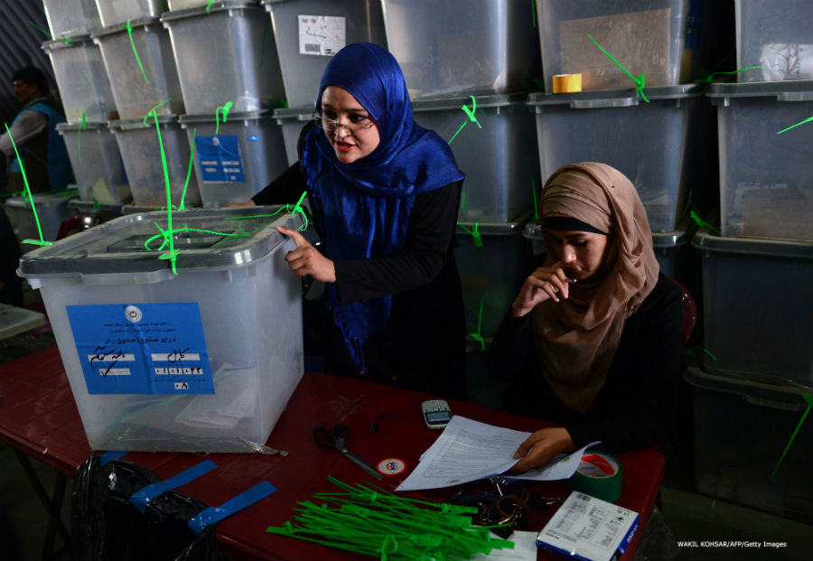
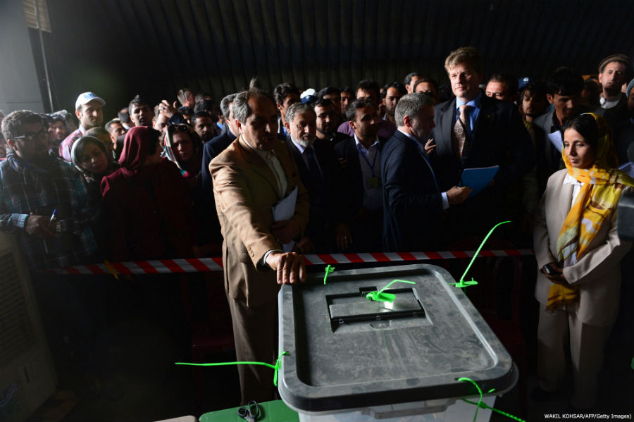

Know previews

چهار روز تا انتخابات ریاست جمهوری ترکیه، شورای عالی انتخابات ترکیه پخش فیلم تبلیغاتی رجب طیب اردوغان، نخست وزیر کنونی و نامزد ریاست جمهوری این کشور را ممنوع کرد.
به گزارش روزنامه جمهوریت، شورای عالی ترکیه علت این تصمیم را استفاده از...

یک عضو ستاد انتخاباتی عبدالله عبدالله پس از توافق با نماینده سازمان ملل در افغانستان به تیم بررسی آرای انتخابات ریاست جمهوری افغانستان پیوست.
احمد بهزاد، عضو ستاد عبدالله درباره این توافق به بی بی سی گفته است که سازمان ملل دو ماده...
کمیسیون انتخابات افغانستان بررسی آرا انتخابات دور دوم ریاست جمهوری را عصر امروز، یکشنبه، بدون حضور نمايندگان ستاد عبدالله عبدالله آغاز کرد.
در همين حال ستاد عبدالله، نامزد معترض انتخابات ریاست جمهوری افغانستان امروز یک فایل صوتی...

علیاکبر ناطق نوری براى چندمين بار در ماه هاى اخير اعلام کرد که بنا ندارد در انتخابات آتی مجلس شورای اسلامی شرکت کند.
به گزارش ايسنا، رئیس دفتر بازرسی مقام معظم رهبری در هشتمین همایش اساتید و دانشجویان ایرانی خارج از کشور گفته:" بنا...

روند بازرسی آرای انتخابات جنجالی افغانستان پیش از شروع به پیشنهاد ستاد عبدالله عبدالله دوباره برای ۲۴ ساعت تعویق افتاد.
هفته گذشته یان کوبیش در نشست خبری مشترکی با احمدیوسف نورستانی، رئیس کمیسیون مستقل انتخابات کلیک اعلام کرد که ستادهای اشرف غنی احمدزی و عبدالله عبدالله بر سر معیارهای...
مصطفی کواکبیان گفته است كه مجلس باید خانه تکانی جدی شود و یک تیم همسو با دولت یازدهم روی کار بیاید.
به گزارش ايسنا ، مصطفی کواکبیان در همایش اصلاح طلبان و دولت یازدهم در کرمانشاه، به نقش اصلاح طلبان در پيروزى روحانى اشاره كرده و افزوده است: بی شک در صورت نبود اصلاح طلبان دولت کنونی روی کار نمیآمد.
رییس شورای هماهنگی جبهه اصلاحات، همچنين از دولت یازدهم خواسته است از نگرش سلیقه ای...

یان کوبیش، فرستاده ویژه دبیرکل سازمان ملل متحد در افغانستان گفته است تاخیر و عقبگرد در روند بازشماری آرای مورد اختلاف در دور دوم انتخابات ریاست جمهوری بر ستاد انتخاباتی دو نامزد و همچنین وضع اقتصادی افغانستان تاثیرات منفی خواهد داشت.
بررسی آرای...

مرتضى آقا تهرانى، دبیرکل جبهه پایداری از تشکیل جلساتی "پسا انتخاباتی" براى يافتن چرايى شكست در انتخابات رياست جمهورى خبر داده است.
به گزارش تدبير، او در مجتمع فرهنگی سیدالشهدا کرمان گفته است : "یکی از برکاتی که بعد از انتخابات شامل جبهه پایداری...

روزنامه شرق نوشته است :" حیدر مصلحی، وزیر اطلاعات دولت دهم که پیشتر گفته بود احمدینژاد میخواست تشکیلات اطلاعاتی را آرامآرام کنار بگذارد، حالا به نظر میرسد برای...
باراک اوباما، رئیس جمهوری آمریکا در تماسی تلفنی با اشرف غنی احمدزی و عبدالله عبدالله دو نامزد ریاست جمهوری در افغانستان گفتگو کرده و از تلاش آنها برای تشکیل دولت وحدت ملی تشکر کرده است.
اوباما ديروز در اين گفتگوی تلفنى از عبدالله و غنى به علت توافق بر سر پذیرش نتایج بررسی آرای...